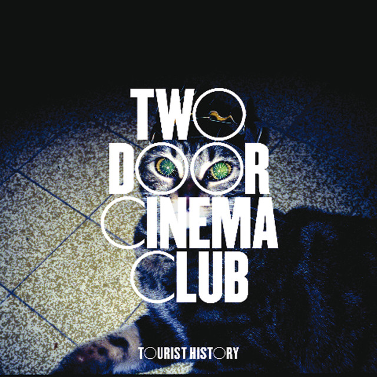

La agrupación británica Friendly Fires te invita a bailar al ritmo de su nuevo sencillo. Escúchalo a continuación. Friendly Fires anunció hace unas semanas que lanzará su nueva producción discográfica. Para dar...

Por: Alex Chambi - 28/JUL/2019
Lo nuevo de Two Door Cinema Club
Noticias
La agrupación británica Two Door Cinema Club participo del evento de musica electronica en Glastoumberie, el pasado 6 de julio en la ciudad de Londres...
Por: Alex Chambi - 28/JUL/2019
Arctic Monkeys estrena nuevo albúm
Noticias
La agrupación británica Two Door Cinema Club participo del evento de musica electronica en Glastoumberie, el pasado 6 de julio en la ciudad de Londres...